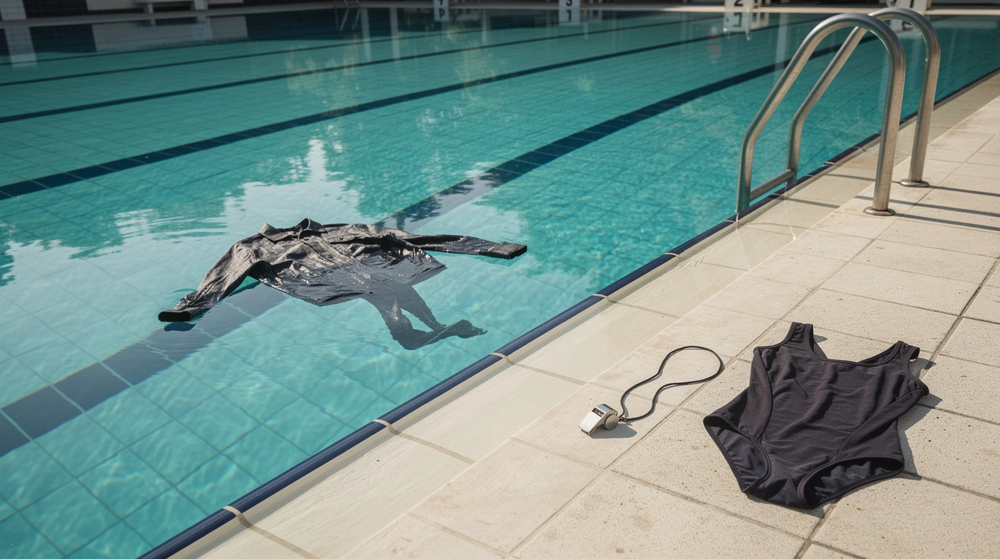

Wenn Badekleidung zur Gesinnungsfrage wird

Im Freiburger Lorettobad darf nicht jeder hinein. Das ist kein Skandal. Das ist der Sinn des Ortes.
Das Bad hat ein separates Damenbad. Seit kurzem gilt an Wochenenden: Zutritt nur noch ab 16 Jahren. Die Begründung der Stadt ist nüchtern. Zu voll, zu eng, kein geordneter Badebetrieb mehr. Also wird begrenzt.
Ein geschützter Raum für Frauen. Mit einer Altersgrenze. In einem kommunalen Freibad.
Bis hierhin wird die Sache als das behandelt, was sie ist: eine Regel, damit ein Ort seinen Zweck erfüllen kann.
Dann kommt die Badeordnung.
Sie untersagt Straßenbekleidung in Bade- und Barfußbereichen. Das ist keine kulturelle Kampfansage, sondern die normale Voraussetzung eines Schwimmbads: Wasser, Hygiene, Sicherheit. So steht es in der Haus- und Badeordnung der Freiburger Bäder.
Der aktuelle Streit dreht sich um Besucherinnen, die in langen Alltagsgewändern ins Wasser gegangen sein sollen. Darüber berichtete das Magazin KOMMUNAL. Die Stadt selbst benennt weder Herkunft noch Religion. Sie spricht offiziell von hoher Auslastung und einem geordneten Betrieb. Genau so sollte man es auch halten.
Denn ein Burkini aus geeigneter Badekleidung ist etwas anderes als Straßenkleidung im Becken. Diese Unterscheidung muss ein Bad treffen können, ohne dass daraus sofort ein Gesinnungstest wird.
Die Frage lautet nicht: Wer darf sich bedecken?
Die Frage lautet: Gilt die Badeordnung auch dann noch, wenn es unangenehm wird, sie durchzusetzen?
Ein Damenbad darf Männer ausschließen, weil es Frauen einen Rückzugsort bieten soll. Es darf Kinder an stark besuchten Tagen ausschließen, damit dieser Ort funktioniert. Es darf Alltagskleidung aus dem Wasser halten, weil ein Schwimmbad keine Wäscherei ist.
Das alles sind Regeln. Und Regeln werden nicht dadurch diskriminierend, dass jemand sie gern nicht beachten würde.
Ausgerechnet dort, wo ein geschützter Raum für Frauen verteidigt wird, zeigt sich die ganze Verwirrung der Debatte. Selbstbestimmung soll gelten. Aber offenbar nur, solange niemand darauf besteht, dass die gemeinsame Ordnung ebenfalls gilt.
Toleranz heißt nicht, jede Grenze aufzulösen. Toleranz heißt, Unterschiede auszuhalten – und trotzdem Regeln für alle zu haben.
Sonst bleibt vom geschützten Raum nur ein Ort übrig, an dem die Lautesten bestimmen, welche Regeln gerade noch zumutbar sind.